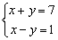

聯立二元一為一次及一為二次方程(I)
更新日期: 2012年1月11日
這兩個程式可解聯立二元一為一次與一為二次方程，亦可以解聯立二元一次方程。另外若果輸入係數為整數/分數及最後答案為有理數時，答案會以分數形式表示，建議將計數機預先設定為假分數形式表示(按 SHIFT SETUP → → 2 )。若果不需要記存聯立二元一次方程的答案，程式中綠色部份可以不輸入。
注意:若果你不用計複數根，為被免混淆及使用方便，建議輸入程式時選用COMP 模式。若要計複數根， 輸入程式時請選用複數模式(選擇新程式位置後按 2 選用CMPLX模式)，當執行程式時，程式會自動進入複數模式。
第一個程式 (134 / 126 bytes)
?→A: ?→B: A┘B→D: ?→A: A┘B→C: ?→M: ?→Y:
?→X: ?→A: XD2 - DYM+: ?→B: BD - CY + 2CDX - A→Y:
?→A: XC2 + BC - A→X: If M: Then Y + √(Y2 - 4MX: Ans┘(2M→A◢
C-DA→B◢ Y┘M - A→X◢ Else X┘Y→X◢ IfEnd: C-DAns→Y
第二個程式 (147 / 139 bytes)
?→Y: ?→C: ?→D: ?→M: ?→X: ?→A:
MC2 - CXY + AY2→M: ?→B: CDX - 2ADY + BC2:
?→B: BCY - Ans→X: AD2 + BCD: ?→B:
Ans - BC2→A: If M: Then X + √(X2 - 4AM: Ans┘(2M→A◢
(D - AY)┘C→B◢ X┘M - A→X◢
Else A┘X→X◢ IfEnd: (D - AnsY)┘C→Y
例題1: 解聯立方程:

按 Prog 1 再按 3 EXE 5 EXE 8 EXE 3 EXE 4 EXE 5 EXE 3 EXE 5 EXE 20
EXE (顯示1) EXE (顯示1，即第一組的解答為 x=1, y=1)
EXE (顯示1/3) EXE (顯示7/5，即第一組的解答為 x=1/3, y=7/5)
程式執行完成後，按 RCL A 及 RCL B分別顯示第一組解答案的x及y的值，按 RCL X 及 RCL Y分別顯示第二組解答案的x及y的值。
例題2: 解以下聯立二元一次方程

按 Prog 1 再按 1 EXE 1 EXE 7 EXE 0 EXE 0 EXE 0 EXE
1 EXE -1 EXE 1 EXE (顯示4) EXE (顯示3)
因此解答為 x = 4 及 y = 3.
程式執行完成後，按 RCL X 及 RCL Y分別顯示解答案的x及y的值。
註1: 程式限制為第二個輸入的係數不可以是0，否則會出現Math error。
註2: 若果兩組的解相同，表示曲線與直線相切。
註3: 若果只計算出一組解答時(非兩組相同的情況)，答案只記存在X及Y的記憶。
註4: 現時不少同類程式，會無法計算下列方程的情況(出現 Math error)，這個程式沒有這方面的問題，其實這類程式必定可以同時計算聯立二元一次方程的問題，若果那個程式不能同時計算聯立二元一次方程，那麼很可能是設計欠嚴謹的程式，會能得出錯 誤的答案(誤以為無解)。

按 Prog 1 再按 3 EXE 4 EXE 7 EXE 15 EXE 8 EXE - 16 EXE
1 EXE 1 EXE 9 EXE (顯示1) EXE (顯示1)
因此解答為 x = 1 及 y = 1.
返回 CASIO fx-50FH、fx-3650P II、fx-50FH II及fx-50F PLUS 程式集